✈️ 往返航班
09/30
TG639 香港 T1 19:05 → 曼谷 20:45
10/01
TG910 曼谷 00:30 → 希思罗 T2 07:15
曼谷中转约 3小时45分
曼谷中转约 3小时45分
10/07
ZH888 希思罗 T2 22:05 → 深圳 T3 17:10+1
先看大框架，再决定细节
10/06 白崖天气窗口最佳；出发前 3 天复核风力、降雨和能见度。
全部行程地点已存入 Google Maps 收藏夹「英国 2026」，按日期标注备注，手机上可直接导航。
在 Google Maps 底部「已保存」中找到「英国 2026」列表
时间是建议，不是军令
希思罗 → Angel → Hackney → Westminster
预留约 1.5–2 小时入境、取行李。不要给上午购买固定时段门票。
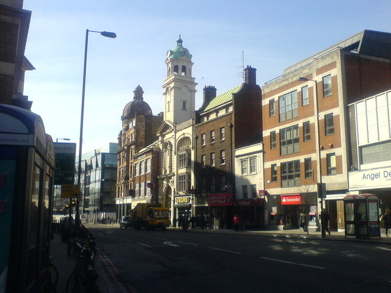
📷 David Martin via Geograph / Wikimedia Commons · CC BY-SA 2.0
攻略：伦敦Islington住宿攻略带行李推荐 Elizabeth line 到 Farringdon，再乘出租…
带行李推荐 Elizabeth line 到 Farringdon，再乘出租车约 10–15 分钟到 Hilton Angel Islington；先寄存，15:00 后再办入住，不等房。
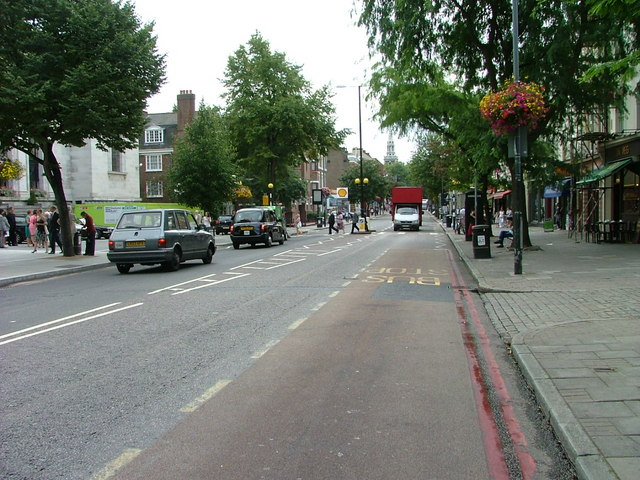
📷 Dave Fergusson via Geograph / Wikimedia Commons · CC BY-SA 2.0
攻略：伦敦最美沙拉店Ottolenghi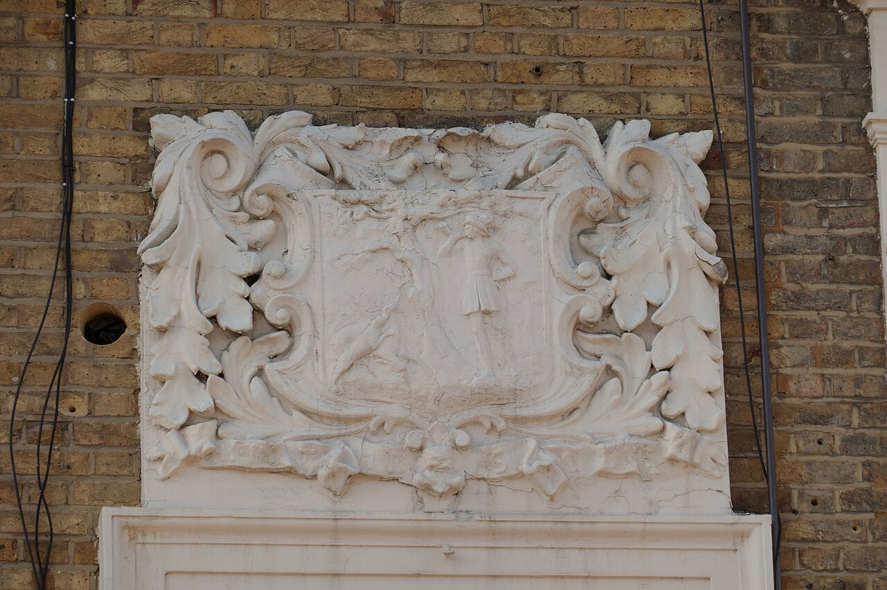
📷 Masato.harada via Wikimedia Commons · CC BY-SA 4.0
攻略：伦敦最佳brunch之Sunday Barnsbury步行 5 分钟到 Ottolenghi Islington（Upper St…
步行 5 分钟到 Ottolenghi Islington（Upper St），地中海风味，自烤面包板和招牌蛋糕是必点；想轻松点选 Sunday（Hemingford Rd），社区氛围好，布里欧修法式吐司是招牌。红眼航班后别吃太撑。
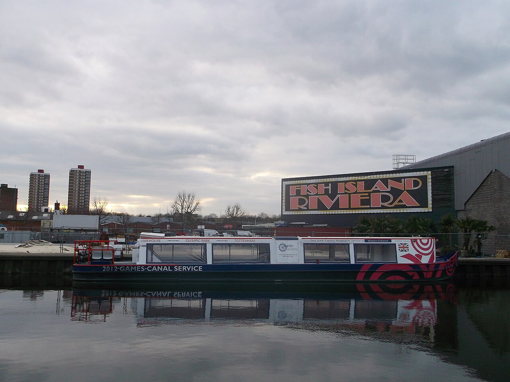
📷 David Anstiss via Geograph / Wikimedia Commons · CC BY-SA 2.0
攻略：伦敦Burberry奥特莱斯攻略精神好：地铁 Angel → Highbury & Islington → …
精神好：地铁 Angel → Highbury & Islington → Hackney Central 约 20 分钟、出站走 3 分钟，到离酒店最近的 Burberry Outlet（29-31 Chatham Place, E9 6LP），周日照常开到 17:00，经典风衣、围巾折扣，过季款为主，只逛 1.5 小时；疲惫就回酒店补觉，15:00 直接办入住。两条线都在 17:20 前汇合去 Westminster。
从 Angel 出发约 25–30 分钟到 Westminster 站，出来…
从 Angel 出发约 25–30 分钟到 Westminster 站，出来即国会大厦。日落 18:40，提前约 40 分钟到机位。

📷 Diliff via Wikimedia Commons · CC BY-SA 2.5
攻略：大本钟绝美机位大公开当天少云，是一周里看日落的好窗口
当天少云，是一周里看日落的好窗口。机位首选 Westminster Bridge 西侧人行道（大本钟+桥同框），或过桥到南岸 London Eye 一侧拍国会大厦剪影；18:40 日落、蓝调时刻持续到约 19:10。带薄外套，河边风大。
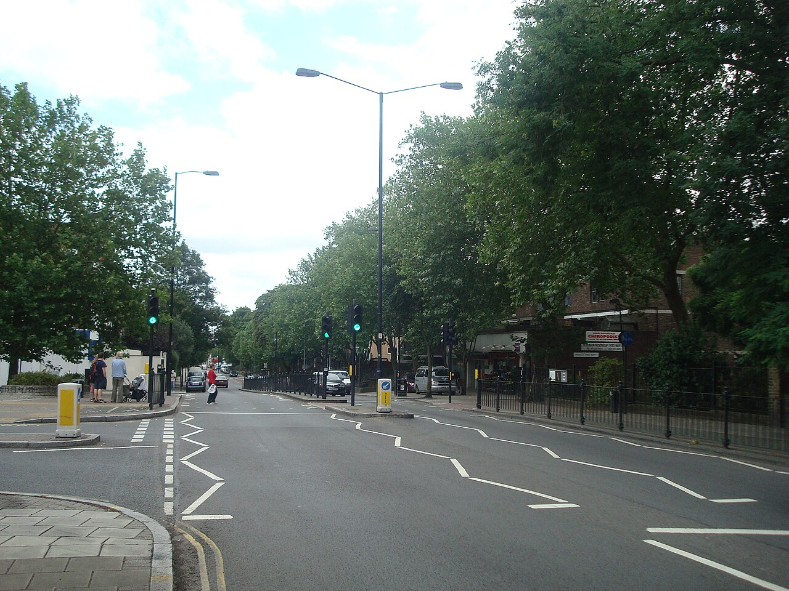
📷 Stacey Harris via Geograph / Wikimedia Commons · CC BY-SA 2.0
攻略：伦敦最佳意面Trullo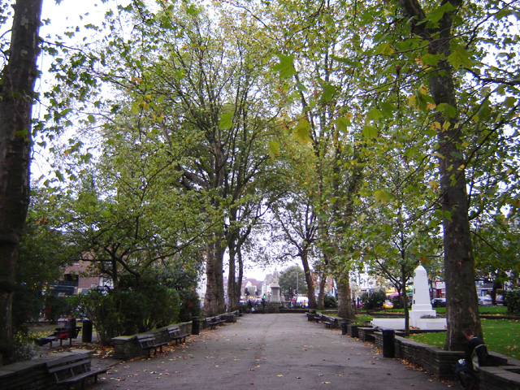
📷 Tarquin Binary via Wikimedia Commons · CC BY-SA 2.5
攻略：Islington法式brunch Bellanger正式吃饭选 Trullo（手工意面、炭烤主菜，需提前订位）
正式吃饭选 Trullo（手工意面、炭烤主菜，需提前订位）；只想简单吃则选 Bellanger（Islington Green，酒店步行约 4 分钟）。第一天不再跨区。
Greenwich → Thames → Tower Bridge → City
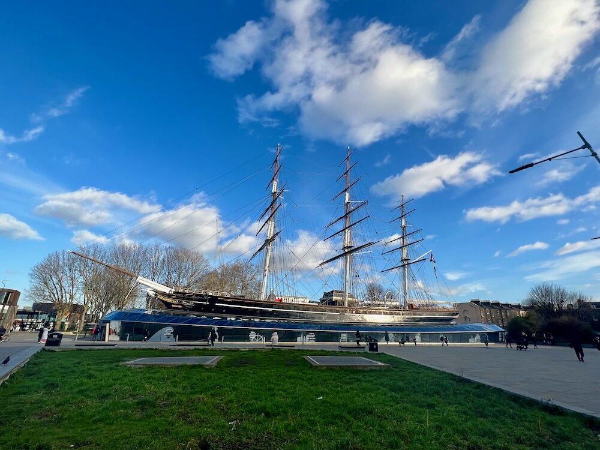
📷 Photo by Ursula Petula Barzey, via Guide London · Photo credit: © Ursula Petula Barzey / Guide London (Royal Borough of Greenwich tourism)
攻略：格林尼治半日游攻略｜本初子午线+卡蒂萨克号地铁到 Bank，换 DLR 到 Cutty Sark，约 45–55 分钟
地铁到 Bank，换 DLR 到 Cutty Sark，约 45–55 分钟。到站后先看 Cutty Sark 外观和 Greenwich Market，不绕去别处。

📷 Photo by Igor Paszkiewicz, via Matador Network · Photo: Igor Paszkiewicz / Shutterstock (editorial reference; replace with CC0/CC-BY for production)
攻略：跨越东西半球的浪漫｜格林威治皇家天文台打卡全攻略穿过 Greenwich Park 上坡约 15–20 分钟，预约 10:0…
穿过 Greenwich Park 上坡约 15–20 分钟，预约 10:00 第一批入场。重点看本初子午线、GMT 与山顶伦敦全景；10–11 月开放 10:00–17:00，最晚入场约 16:00。
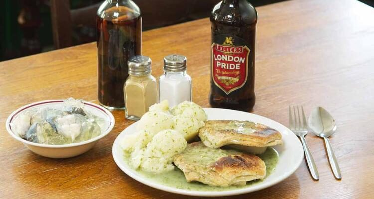
📷 Photo via DesignMyNight / Goddards at Greenwich · Editorial food photography via DesignMyNight (Goddards at Greenwich pie & mash with green liquor)
攻略：格林威治美食｜伦敦最正宗Pie & Mash百年老店从山顶下坡回镇中心，吃传统英式 pie & mash，速度快、有格林尼治特色，控制 45 分钟。
从 Greenwich Pier 坐船向西，约 23 分钟到 Tower M…
从 Greenwich Pier 坐船向西，约 23 分钟到 Tower Millennium Pier；把泰晤士河游船体验融进交通，不额外绕路。

📷 Photo via Unsplash (Tower Bridge blue hour) · Unsplash License (free for commercial use, no attribution required but appreciated)
攻略：伦敦塔桥必拍机位分享📸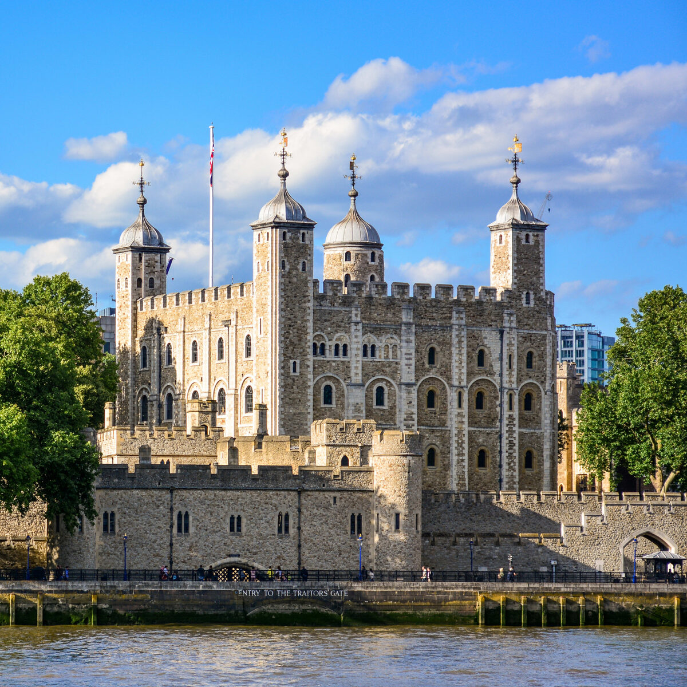
📷 Photo via The London Pass (White Tower, Tower of London) · Promotional image via The London Pass / Partnerize (White Tower from Thames)
攻略：英国伦敦必打卡！伦敦塔桥+伦敦塔一日游指南Tower Pier 下船，沿河看伦敦塔外观，再过塔桥到南岸；不上塔桥展览，给固定预约留缓冲。
从塔桥北侧步行约 15 分钟到 20 Fenchurch Street
从塔桥北侧步行约 15 分钟到 20 Fenchurch Street。15:45 前到、16:15 入场；带照片身份证件和电子票，少带大包，场内无现金。

📷 Photo via Dreamstime editorial (Sky Garden, 20 Fenchurch Street) · Editorial image via Dreamstime (Sky Garden atrium interior)
攻略：伦敦最高免费花园！Sky Garden 360°俯瞰伦敦天际参观约 1 小时，看塔桥、碎片大厦和泰晤士河全景
参观约 1 小时，看塔桥、碎片大厦和泰晤士河全景；你的票允许加入队列的时间就是 16:15，晚到超过 30 分钟可能无法入场。
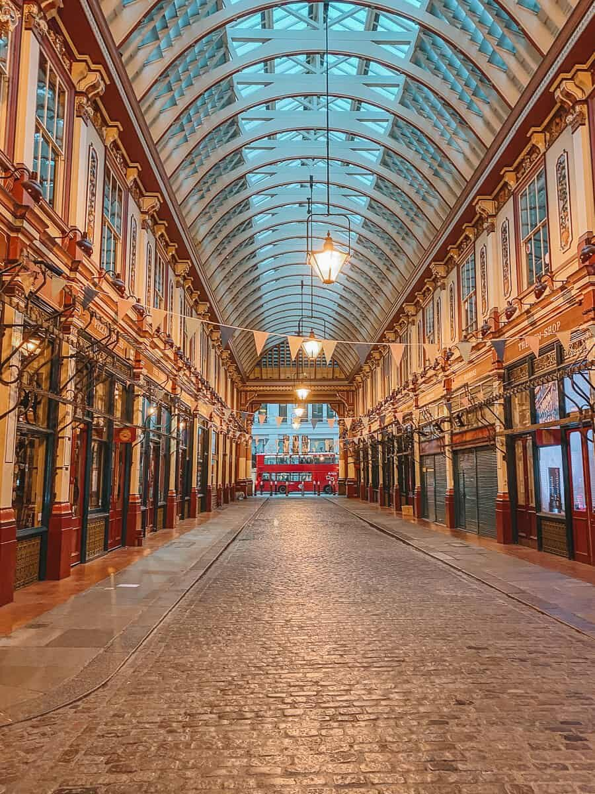
📷 Photo via Third Eye Traveller · Travel blog photo via Third Eye Traveller (Leadenhall Market arcade)
攻略：伦敦拍照攻略｜哈利波特同款商店·利德贺市场Sky Garden 步行约 5 分钟，吃完从 Bank 直接回 Angel，不再返回西区。
Bloomsbury → Covent Garden → Soho
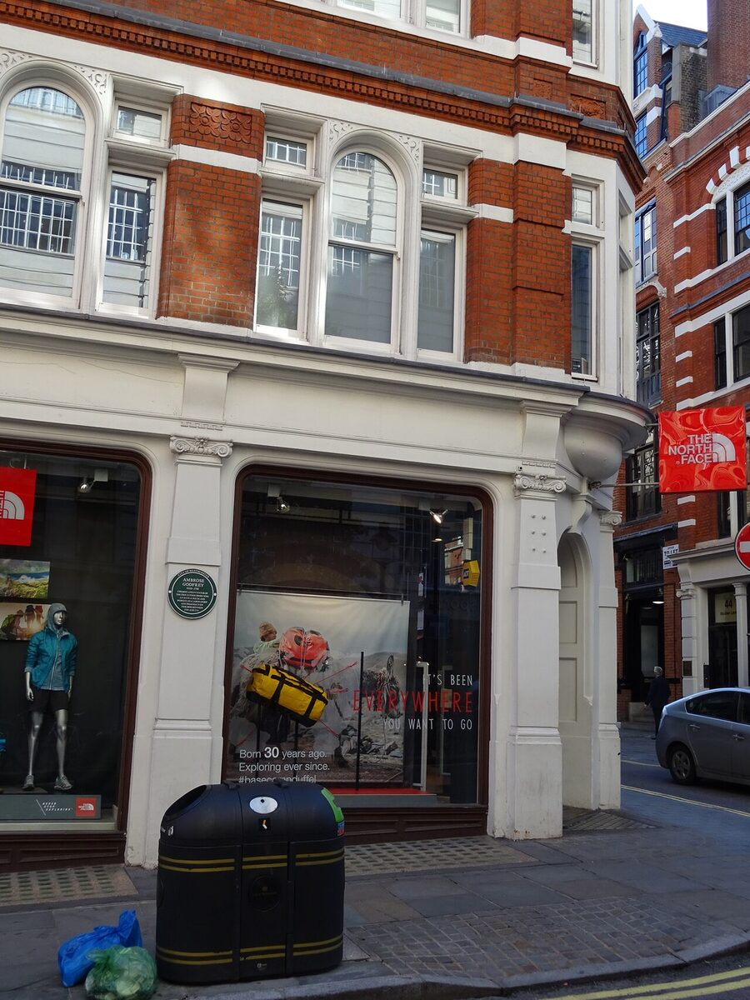
📷 Spudgun67 via Wikimedia Commons · CC BY-SA 4.0
攻略：Abuelo Covent Garden brunch不去酒店旁吃早餐，直接从 Angel 到 Covent Garden
不去酒店旁吃早餐，直接从 Angel 到 Covent Garden。你收藏的 Abuelo 09:00 开门（周末），点招牌无花果吐司和咖啡；吃完沿 Shaftesbury Ave 向北走到大英博物馆，约 12–15 分钟。
Covent Garden → Seven Dials → British …
Covent Garden → Seven Dials → British Museum，一路向北，不折返。

📷 Diliff via Wikimedia Commons · CC BY-SA 3.0
攻略：大英博物馆逛到中国展区五味杂陈建议顺序：大中庭 → 罗塞塔石碑与埃及 → 亚述浮雕 → 帕特农雕塑 → 木乃伊。
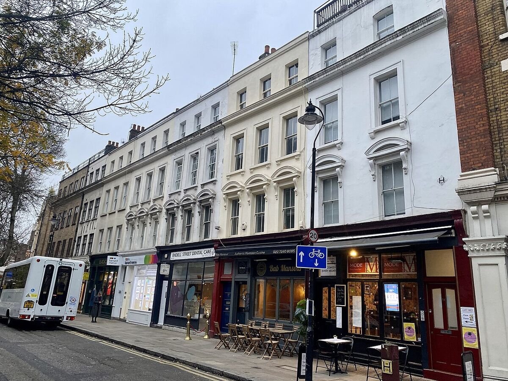
📷 No Swan So Fine via Wikimedia Commons · CC BY-SA 4.0
攻略：伦敦最古老炸鱼薯条店（1871年）从博物馆向南步行约 10 分钟到 47 Endell St，吃你收藏的老牌炸…
从博物馆向南步行约 10 分钟到 47 Endell St，吃你收藏的老牌炸鱼薯条（12:00 开门）；点 cod/haddock + chips，留 60 分钟。
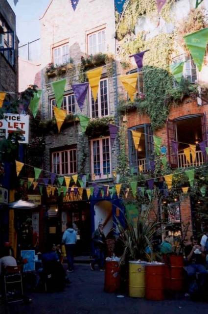
📷 D Johnston via Geograph / Wikimedia Commons · CC BY-SA 2.0
攻略：Neal's Yard拍照指南餐厅就在 Seven Dials 东侧，饭后向西逛 Neal's Yard，再去 Soho；一路顺向。
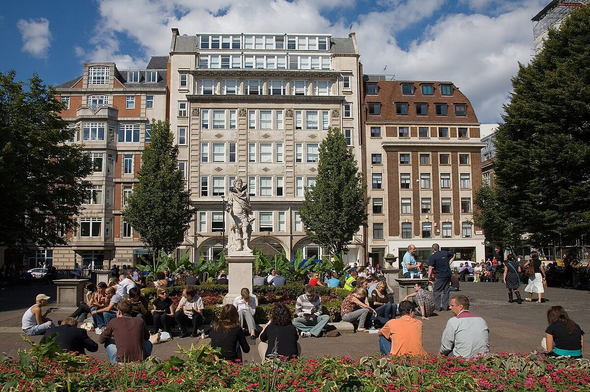
📷 Diliff via Wikimedia Commons · CC BY 2.5
攻略：伦敦必比登手工意面Bancone从 Seven Dials 向西步行约 15 分钟到 Golden Squa…
从 Seven Dials 向西步行约 15 分钟到 Golden Square。点招牌 silk handkerchief pasta；周六营业到 22:30，建议提前订 17:30。若 19:30 看剧，吃完步行去西区剧院。
King’s Cross 当天往返
从酒店到车站很近，建议预留早餐和找站台时间
从酒店到车站很近，建议预留早餐和找站台时间。Outlet 已安排在 10/01 下午，今天不再绕去 Hackney。

📷 Photo by Martinvl, via Wikimedia Commons · CC BY-SA 4.0
攻略：剑桥一日游完美攻略🚀Parker’s Piece → King’s Parade → Marke…
Parker’s Piece → King’s Parade → Market Square。车站到老城可步行约 20–25 分钟，也可乘公交或出租车。
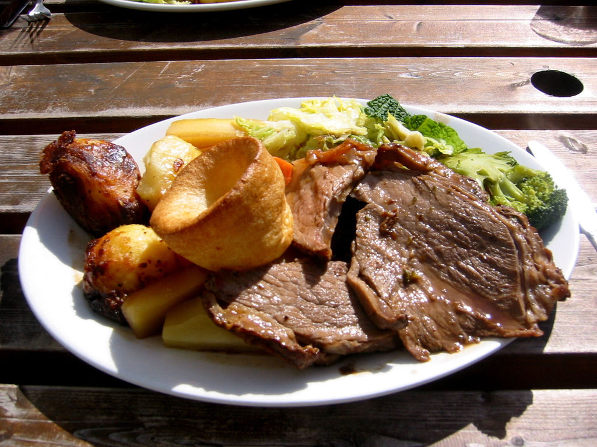
📷 Photo by Jeremy Keith (Flickr: adactio), via Wikimedia Commons — representative Sunday roast · CC BY 2.0
攻略：剑桥一日游完美攻略🚀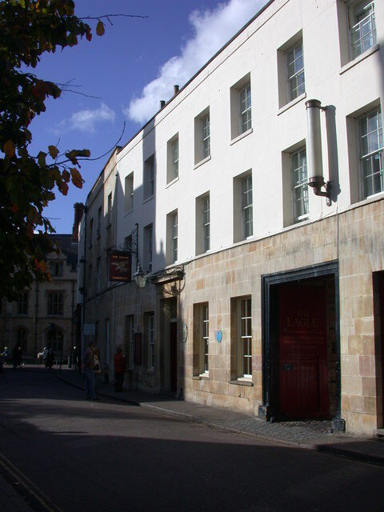
📷 Photo by Keith Edkins, via Wikimedia Commons / Geograph · CC BY-SA 2.0
攻略：剑桥一日游：谁的青春没有一首徐志摩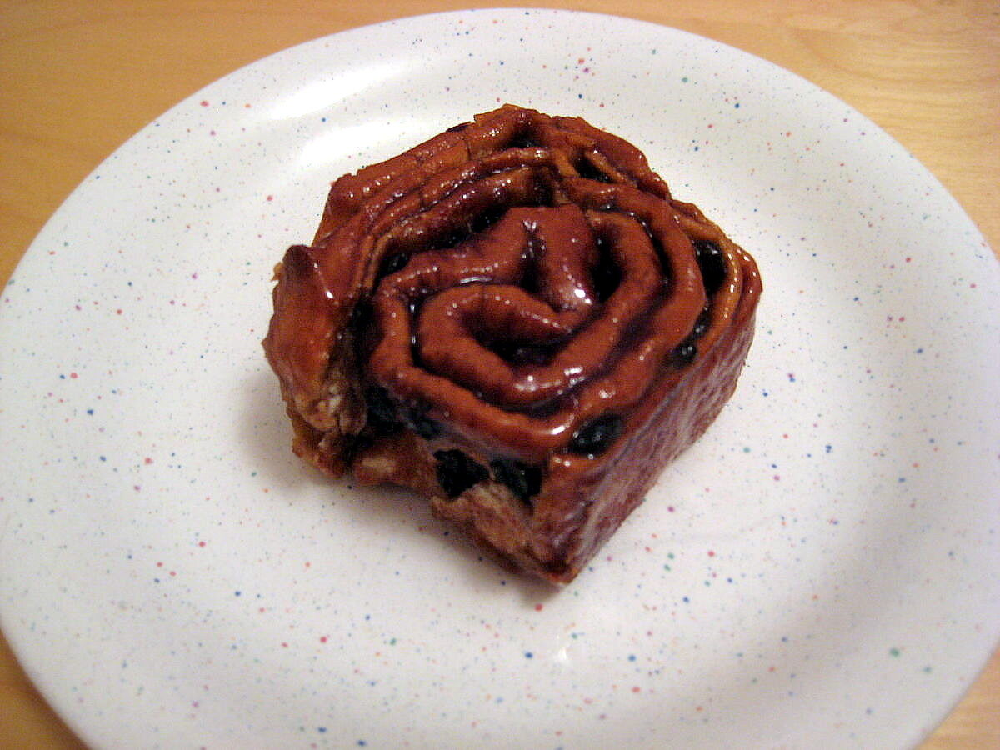
📷 Photo by Petecarney at English Wikipedia, via Wikimedia Commons — representative Chelsea bun · CC BY-SA 3.0
攻略：One-Day Cambridge Punting and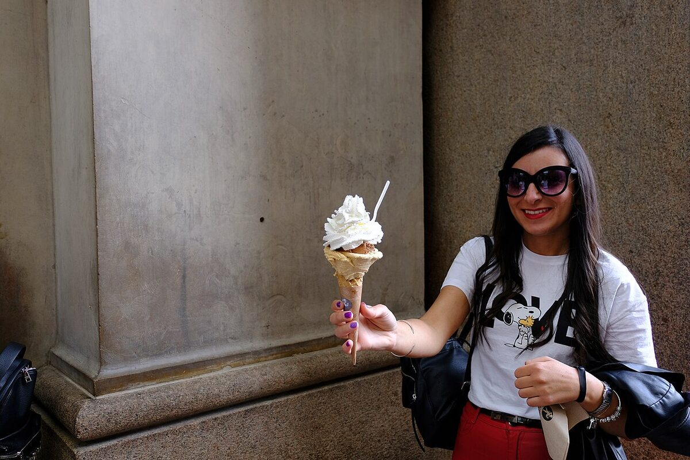
📷 Photo by Jason Chung, via Wikimedia Commons — representative gelato cone · CC BY 2.0
攻略：剑桥美食 Jack's Gelato 英国No.1冰淇淋正餐推荐 The Cambridge Chop House（国王学院旁，英式…
正餐推荐 The Cambridge Chop House（国王学院旁，英式酒馆菜）或 The Eagle（DNA 双螺旋当年在这宣布的历史酒吧，氛围拉满、菜是经典 pub food）。甜点别错过：Fitzbillies 百年老店的 Chelsea Bun（糖霜肉桂卷，1920 年至今，连 Stephen Fry 都推）、Jack's Gelato 剑桥网红冰淇淋（椰子香芋、咸太妃、小豆蔻玫瑰口味）。至少留 75 分钟。

📷 Photo by Peter Trimming, via Wikimedia Commons / Geograph · CC BY-SA 2.0
攻略：携程笔记-寻迹徐志摩！剑桥康河撑船攻略约 45–50 分钟，选正规运营商 chauffeured tour，不自己…
约 45–50 分钟，选正规运营商 chauffeured tour，不自己撑船。码头认准 Scudamore's（Mill Lane）或 Quayside 门店，别在 King's Parade 跟街头拉客的砍价——常被带去排长队或临时加价。拼船带讲解约 £20–35/人，会讲叹息桥、数学桥和徐志摩。十月备保暖层。
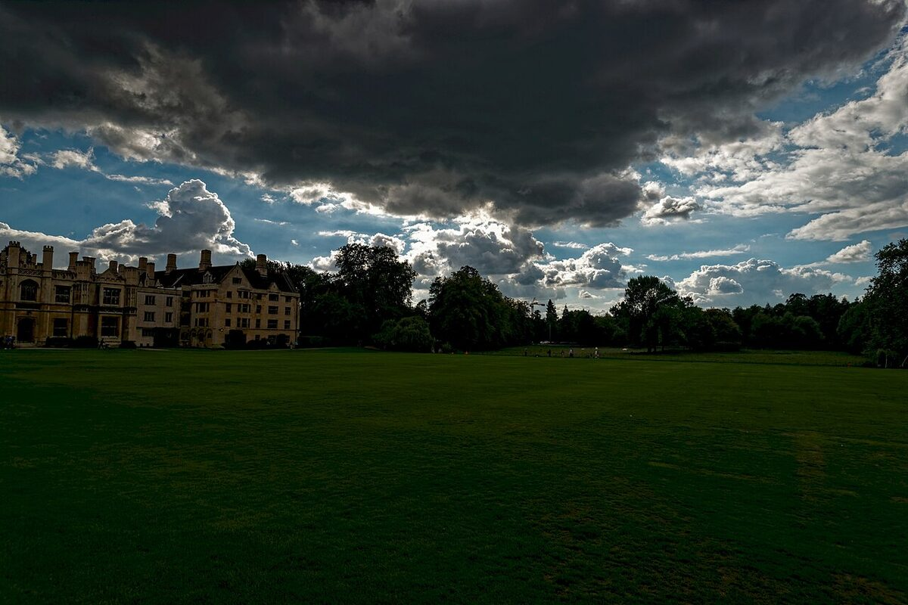
📷 Photo by Txllxt TxllxT, via Wikimedia Commons · CC BY-SA 4.0
攻略：携程笔记-剑桥一日游完美攻略🚀根据当日学院开放情况选 1 所进入，不为了集邮排队。
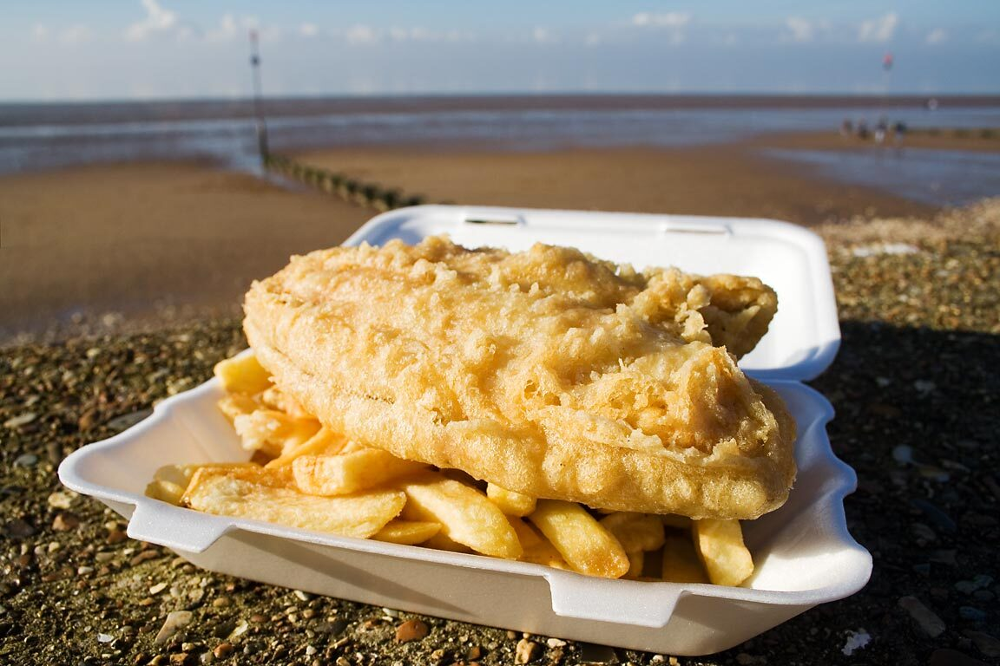
📷 Photo by Andrew Dunn, via Wikimedia Commons — representative fish and chips · CC BY-SA 2.0
攻略：剑桥一日游完美攻略🚀撑船结束后步行 5 分钟到 The Anchor，康河边老牌酒吧，露台位看河…
撑船结束后步行 5 分钟到 The Anchor，康河边老牌酒吧，露台位看河景，点一杯本地 ale 或热红酒（十月），是剑桥最舒服的收尾方式。
预计 19:30 左右回酒店，附近晚餐。
Angel → Marylebone → Soho → Knightsbridge
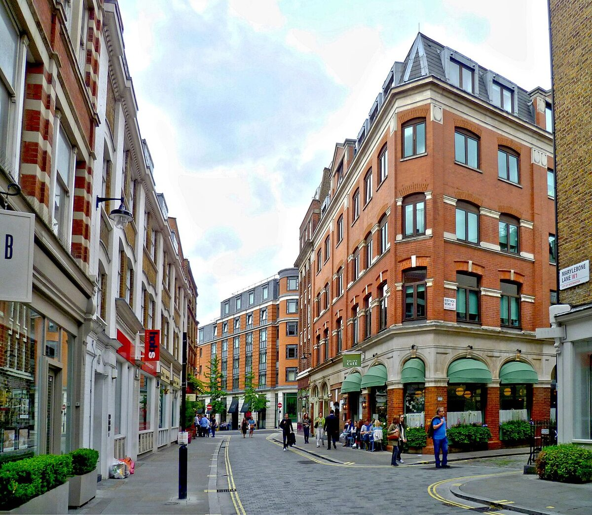
📷 Philafrenzy via Wikimedia Commons · CC BY-SA 4.0
攻略：Marylebone设计酒店The BoTree3 人带行李直接出租车；寄存行李后步行前往 Soho。
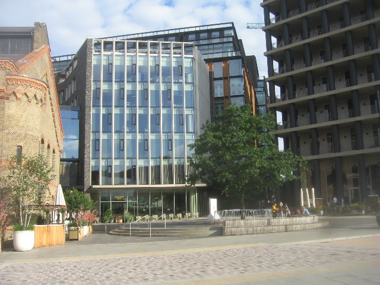
📷 Fernweh via Geograph / Wikimedia Commons · CC BY-SA 2.0
攻略：伦敦澳式brunch名店The BoTree 步行约 8 分钟，点 Ricotta Hotcakes…
The BoTree 步行约 8 分钟，点 Ricotta Hotcakes 或软炒蛋。Bancone 已固定在 Day 3 晚餐，今天不重复、不绕去 Soho。

📷 Dietmar Rabich via Wikimedia Commons · CC BY-SA 4.0
攻略：Harrods伴手礼测评从 Bond Street 乘 Jubilee line 到 Green P…
从 Bond Street 乘 Jubilee line 到 Green Park，再换 Piccadilly line 到 Knightsbridge；先逛 Harrods。这里不再安排 Burberry 正价店。
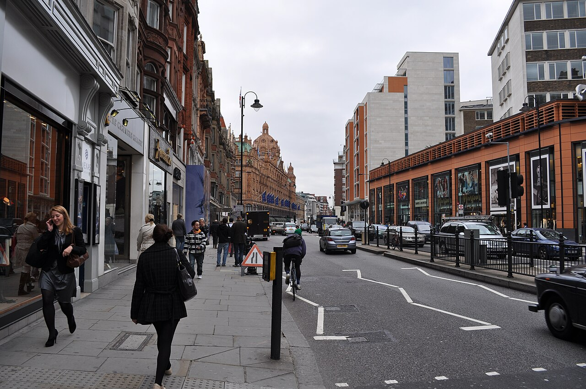
📷 Lewis Clarke via Geograph / Wikimedia Commons · CC BY-SA 2.0
攻略：哈罗德周边美食ALBA秒回南意Harrods 正对面 70 Brompton Rd
Harrods 正对面 70 Brompton Rd。必点 pistachio tiramisu；下午茶只吃甜品和咖啡，吧台 walk-in 概率较高，仍建议官网订位。
打车约 15–20 分钟回 The BoTree 入住、休息，第二天白崖早起。
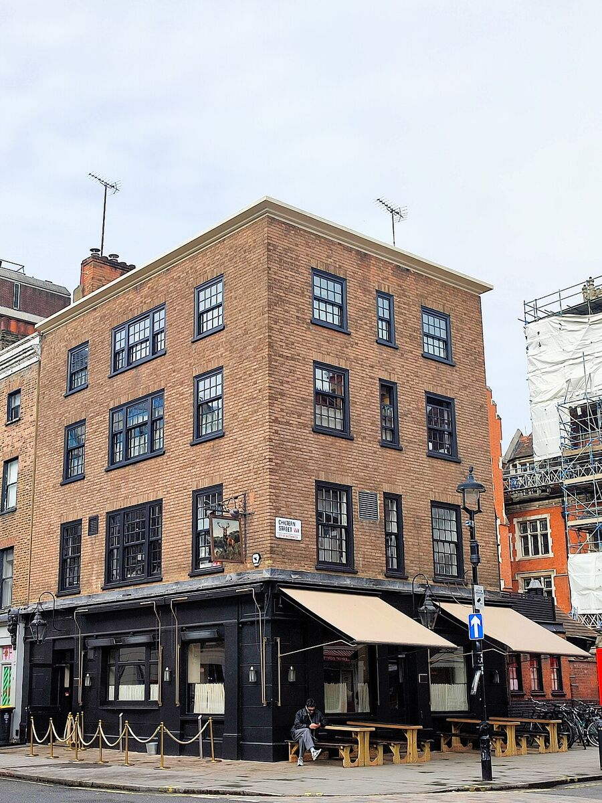
📷 Ewan-M via Wikimedia Commons · CC BY-SA 4.0
攻略：Marylebone转角pub The Hart酒店步行约 5 分钟，点英式烤鸡或派，不跨区、不喝太晚。
East Sussex 风景一日游
早上出租车到 Victoria，避免地铁换乘消耗。
火车约 1.5 小时，买 off-peak day return（约 £20…
火车约 1.5 小时，买 off-peak day return（约 £20 多），提前 7–10 天买更便宜。关键避坑（来自实测踩坑帖）：到 Eastbourne 后转巴士，非周日坐 12/12A/12X，周日只有 13 路���想少走路直接坐到 Birling Gap 站（悬崖入口），别在"Seven Sisters Country Park"站下——那站荒无人烟、离崖顶还要暴走半小时。单程 £3 左右，可买日票。

📷 Photo by StephenDawson, via Wikimedia Commons · CC BY-SA 2.0
攻略：携程笔记-英国白崖｜七姐妹徒步攻略从 Visitor Centre 沿河谷走向 Cuckmere Haven，…
从 Visitor Centre 沿河谷走向 Cuckmere Haven，往返约 4 公里，地势相对平缓。
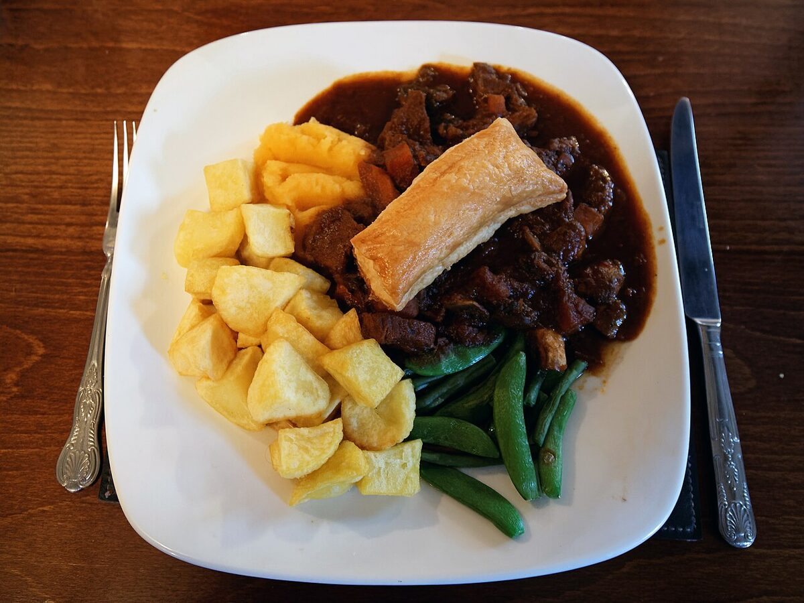
📷 Photo by Acabashi, via Wikimedia Commons — representative steak and ale pie · CC BY-SA 4.0
攻略：携程笔记-奔赴世界尽头白崖徒步封神强烈推荐 Cuckmere Inn，就在 Country Park 入口旁，…
强烈推荐 Cuckmere Inn，就在 Country Park 入口旁，河畔露台位。必点：炸鱼薯条（£15 左右）、Harvey's Sussex Best Bitter 本地苦啤，十月壁炉已经生了，进屋暖一下。 Visitor Centre Cafe 只有三明治蛋糕，走累了还是坐下来吃口热的。下午按天气、体力二选一。
出租车前往 Birling Gap，看海滩与悬崖，短距离散步后返回 Eastbourne。全天约 4–6 公里。
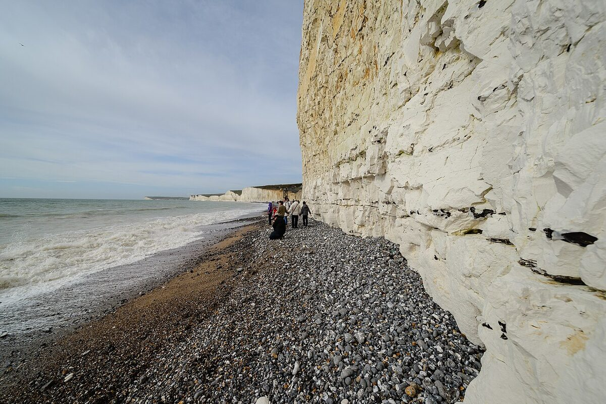
📷 Photo by Arild Vågen, via Wikimedia Commons · CC BY-SA 4.0
攻略：携程笔记-英国白崖｜七姐妹徒步自由感Birling Gap → Exceat 悬崖步道约 7 公里，官方标注中等难度、约 1.5–3 小时；仅在干燥、低风且体力充足时选择。
Marylebone → Regent’s Park → Heathrow
最后一天不把行李带去景点。

📷 pam fray via Geograph / Wikimedia Commons · CC BY-SA 2.0
攻略：摄政公园玫瑰园打卡花园、湖景与秋色；从酒店往北即可到达，不去东伦敦再折返。
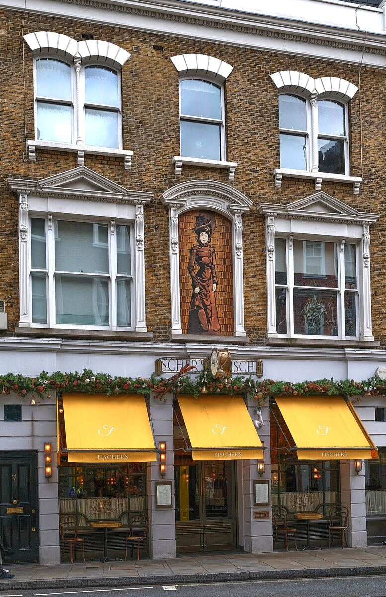
📷 Anthony O'Neil via Geograph / Wikimedia Commons · CC BY-SA 2.0
攻略：Marylebone维也纳餐厅Fischer's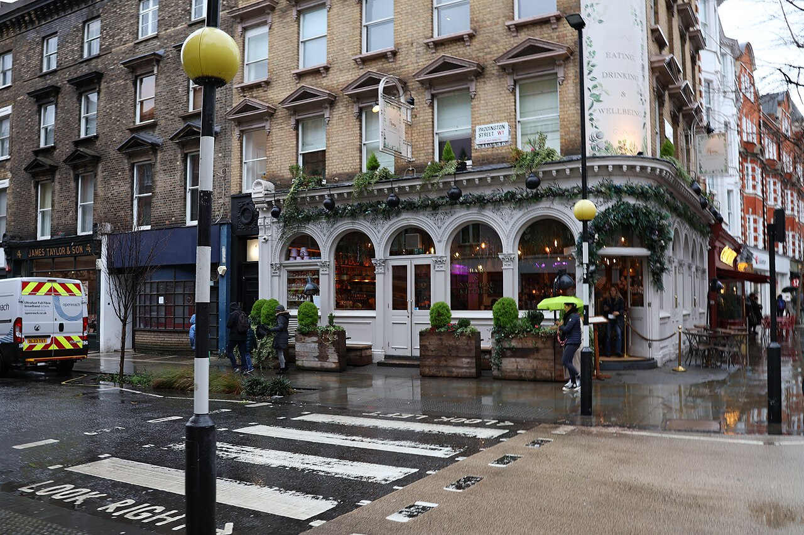
📷 DiscoA340 via Wikimedia Commons · CC BY-SA 4.0
攻略：Marylebone High Street逛买攻略回酒店周边活动，控制变量，下午留充分缓冲
回酒店周边活动，控制变量，下午留充分缓冲。想吃英式最后一顿推荐 Fischer's（Marylebone High St，奥地利咖啡馆，炸肉排 schnitzel 招牌，接受 walk-in）；轻食就 The Wolseley（Piccadilly 方向稍远但值得）经典欧式下午茶。Marylebone High St 上很多独立小店可最后扫货。
检查护照、退税材料、充电设备和随身行李。
从 Bond Street 乘 Elizabeth line 前往 Heat…
从 Bond Street 乘 Elizabeth line 前往 Heathrow T2&3，目标 19:00 前抵达机场，为 22:05 航班留足时间。
只锁定真正需要的项目
这是整套路线顺畅的前提，避免白崖当天换酒店。
选 10/03 10:00 左右；免费但建议预约。
10–11 月 10:00–17:00，最晚约 16:00 入场；网…
带照片证件和电子票，15:45 前到 Philpot Lane 入口…
周日 18:00 开门，热门，提前官网订 19:45 左右；红眼航班…
10/01 下午顺路逛 Chatham Place 折扣店；提前记录…
先看天气趋势，再订可改签或风险较低的选择。只从正规运营商购票。
出发前 7–10 天结合天气订；巴士班次出发前一天再核对。
只在 10/03 选到真正想看的剧目后再订，看剧选 Hawksmoo…
勾选状态保存在本机